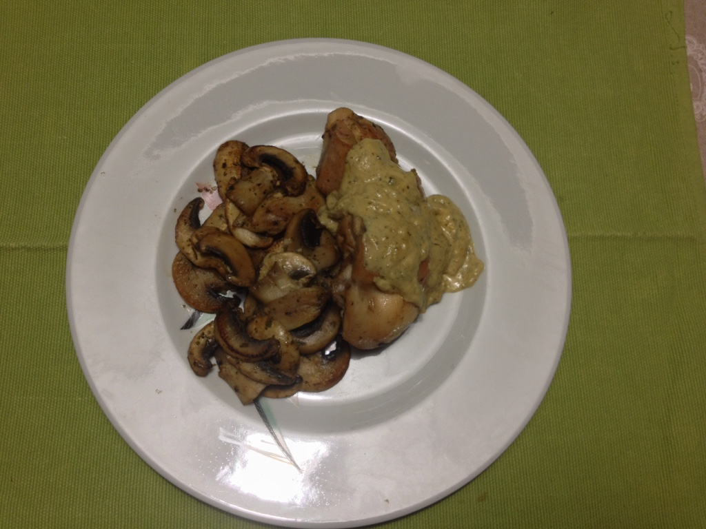
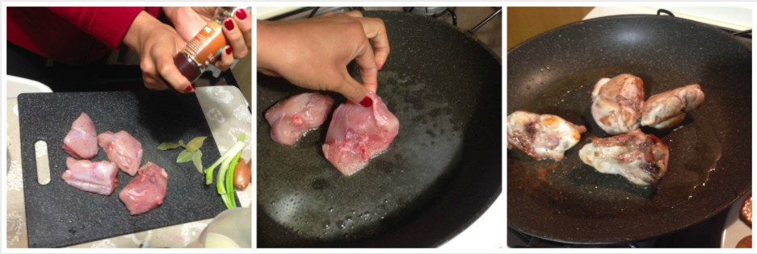
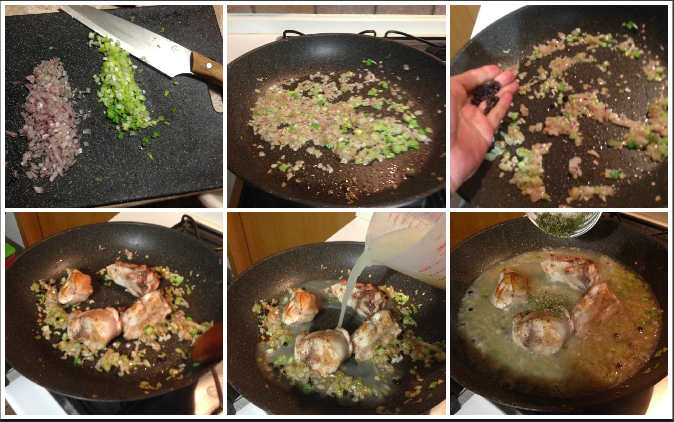
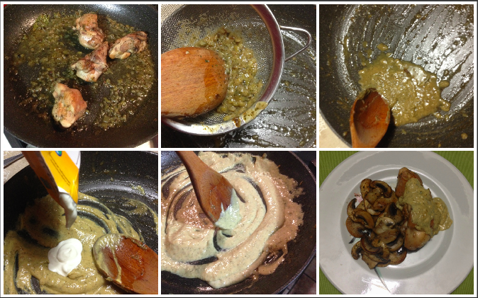

Rabbit with mustard sauce¶

I am new in cooking rabbit... I had bunnies when I was a kid/teenager and just the idea to eat something so fluffy and cute was as imaging myself eating my cuddly toy. So, my SO likes rabbit and one day I decided to get over about this idea and try new things. I must to confess that at the end I really liked rabbit. It is tastier than chicken... but it has to be in pieces and without the head in the pack. I was looking for recipes and I found this recipe that combines mustard (I really love mustard) and cream (my inner fat girl is happy all the times when there is cream around). This recipe is really tasty, I like the combination of all theses spices and the mustard in a very delicate cream.
- Serves: 2
- Type: main
Ingredients¶
- 1 small rabbit in pieces: for this recipe I used some loin slices
- 2 garlic cloves
- 2 small green onions
- 4 tablespoon Dijon mustard
- 3 tablespoon butter
- 2 small scallions
- 200 ml chicken broth
- 100 ml cream
- 2 bay leaves
- 1/2 tablespoon sage
- 1/4 ground cumin
- 1 teaspoon thyme
- 1/2 tablespoon dry parsley
- 1 tablespoon peppercorns
- 1/2 tablespoon juniper berries
- 1 teaspoon dry rosemary
- Salt and pepper to taste
Steps¶
Mix all the spices, but keep apart the bay leaves, peppercorns, juniper berries, salt and pepper.
Salt and sprinkle the rabbit, melt the butter and brown the rabbit for all sides. Then set aside.
Brown the rabbit
Chop the green onions and the scallions, stir fry them in the same rabbit grease. Add the bay leaves and the juniper berries and peppercorns. Cook for a few minutes.
Add back the rabbit, stir, add the chicken broth and the spices mix.
Cook till the rabbit is tender and the broth will be reduced but not completely consumed.
Cooking the rabbit
Set aside the rabbit in a warm place. Pass the broth with the spices and onions by a colander on the skillet, add the cream to the sauce, cook with medium heat for a few minutes stirring continuously.
Preparing the sauce
Place the rabbit in a plate and pour on it the mustard cream sauce. Serve and enjoy it!.
Can be served with¶
- grilled zucchini
- Sauté champignons
- green beans with garlic butter
- potatoes pureé
- sauté potatoes with rosemary